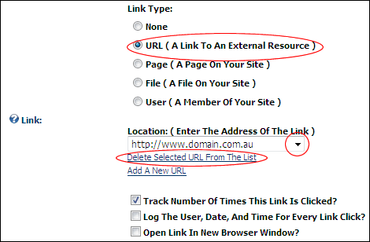

Deleting a URL from the Links URL List
How to delete a URL from the existing URL's list on the Link Control. URL's that have been set using the Link Control are stored on the Link Control. These URL's can then be selected by Editors to quickly and easily reuse without re-entering the URL. Administrators can delete URL's from this list. Deleting a URL will not remove any links that have been set to the URL using a module.
- At Link / Link Type, select URL (A Link To An External Resource).
- Below the Link / Location: ( Enter The Address Of The Link ) text box, click the Select An Existing URL link. This displays a list of the existing URL's in the Link / Location: ( Enter The Address Of The Link ) drop down list.
- At Link / Location: ( Enter The Address Of The Link ), select the URL to be deleted.
- Click the Delete Selected URL From The List link. This displays the message "Are You Sure You Wish To Delete This Item?"

- Click the OK button to confirm.